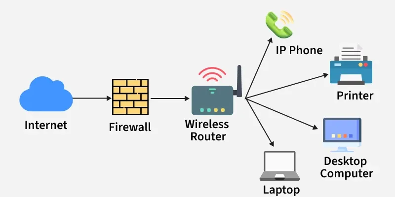

Hello! My name is Grant. After high school, I want to study software engineering. I am building this site to learn more about the Internet and how it works.
Unit 1 & 2 Vocabulary
Internet Protocol (IP): Assigns unique IP addresses to devices and determines how data is routed between them.
Transmission Control Protocol (TCP): Ensures reliable, ordered, and error-checked delivery of data packets.
User Datagram Protocol (UDP): A lightweight alternative to TCP with minimal error-checking (faster but less reliable).
Packets: Small chunks of data into which larger messages are divided for transmission. Packets may arrive in order, out-of-order, or not at all.
Routers: Specialized computers that forward data across networks, choosing the fastest available path.
Domain Name System (DNS): Translates human-readable domain names (like example.com) into IP addresses.
Hypertext Transfer Protocol (HTTP): Used for transmitting and requesting web pages and media on the World Wide Web.
World Wide Web (WWW): A system of linked pages, media, and files browsable over HTTP.
With digital communication, we share information instantly.
In society, globalization has spread culture and ideas.
Technology also raises concerns about privacy and security online.

Video: How the Internet Works
AI on the Internet
Artificial Intelligence (AI) plays a big role in how we use the Internet today.
Search engines and social media platforms use AI to recommend videos, posts, and ads.
AI helps detect spam and cyberattacks, but it can also raise questions about privacy and bias.
Fun Fact: Over 90% of online content is influenced in some way by AI algorithms!